theadventuresoftimmy.com
Original Concept By
Executive Producers
- Brian Edelman
- Nick Godfrey
- Andrew Howlett
Senior Producer
Creative Director
Project Coordinator
Lead Artist / Art Director
Character Design / Animation
Programmers
- Heber Sheffield
- Josh Buhler
Level Art
Level Design
User Interface Design
Music & Sound Design
- Produced by Jared Schlemovitz and Mary Wood
- Composed by Scott Hollingsworth
- Sound Design by Sachar Mathias
- Sound Consulting by Daniel Gonzalez
QA Lead & Gameplay Experience
Playtest Lead
Writer
Story Art
Special Thanks
To all of our wives, girlfriends, boyfriends, families, kids and dogs. We thank you so much for your support and the sacrifices you've made during the making of this game. We appreciate the love and encouragement you gave us through the many long hours, late nights, weekends and holidays.
Thank you.
©2011. Rights Reserved